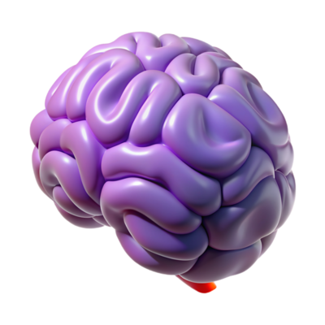
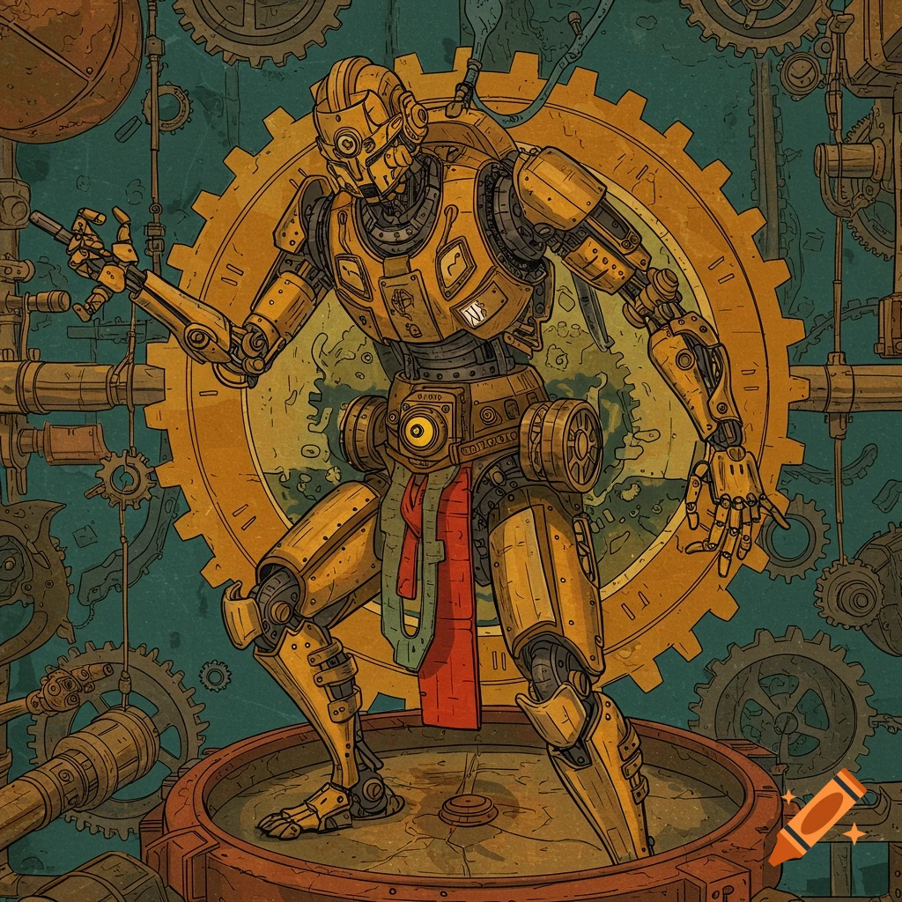
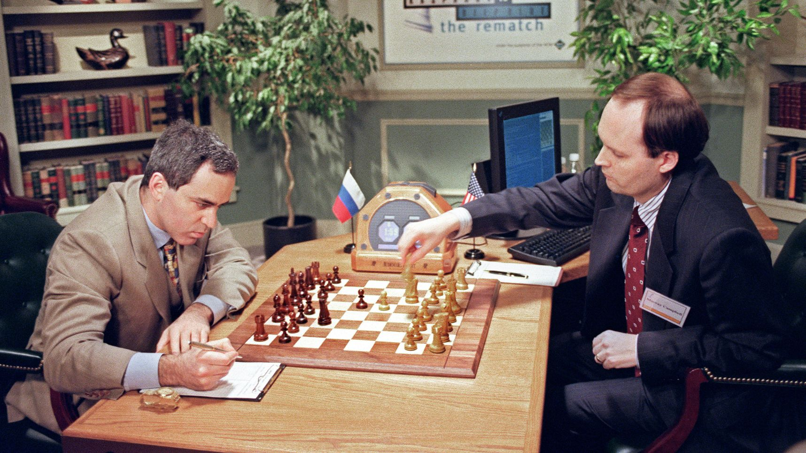

Timóteo Graebin ° João Victor ° Gabriel ° Matheus
Inteligência Artificial: Como Tudo Começou
A inteligência artificial pode até parecer uma novidade dos últimos
anos, mas a verdade é que a ideia de criar máquinas que imitem o
pensamento humano existe há séculos. Lá na Antiguidade já se falava
de autômatos nos mitos gregos e do Golem nas lendas hebraicas. Ao
longo do tempo, cientistas e filósofos foram dando forma a essa
ideia — como no século XVII, com as primeiras calculadoras mecânicas
de Leibniz e Pascal, ou no século XIX, com a "Máquina Analítica" de
Charles Babbage e os conceitos visionários de Ada Lovelace. Já em
1950, Alan Turing propôs seu famoso teste para medir a inteligência
das máquinas, e poucos anos depois, em 1956, nascia oficialmente o
termo "inteligência artificial", cunhado por John McCarthy.

Durante as décadas seguintes, o campo passou por altos e baixos. Os
anos 1950 a 1970 foram marcados por otimismo e avanços curiosos,
como o Logic Theorist e o chatbot ELIZA. Mas nem tudo saiu como o
esperado: nos anos 1980, a IA enfrentou seu “inverno”, um período de
frustração e cortes de investimento. Só nos anos 1990 é que as
coisas começaram a mudar de verdade. O poder computacional cresceu,
os dados ficaram mais acessíveis, e os algoritmos ficaram mais
sofisticados — foi nessa época, por exemplo, que o Deep Blue venceu
o campeão mundial de xadrez, Garry Kasparov, em 1997.

Hoje, a inteligência artificial está em todo lugar — dos assistentes
virtuais nos nossos celulares aos sistemas que recomendam filmes,
ajudam médicos e até dirigem carros. E o mais impressionante é que
esse é só o começo. A IA já é peça-chave na transformação digital, e
empresas como a Zendesk mostram como ela pode melhorar o atendimento
ao cliente, automatizar processos e gerar novos insights. No fundo,
a história da IA é também a história da nossa curiosidade e da
vontade de criar tecnologias que pensem junto com a gente — ou até à
nossa frente.